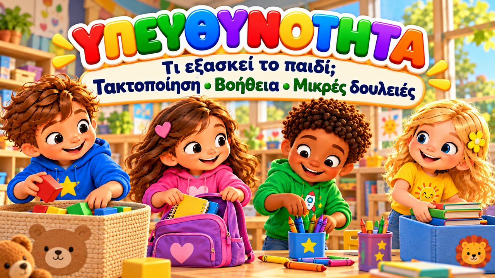
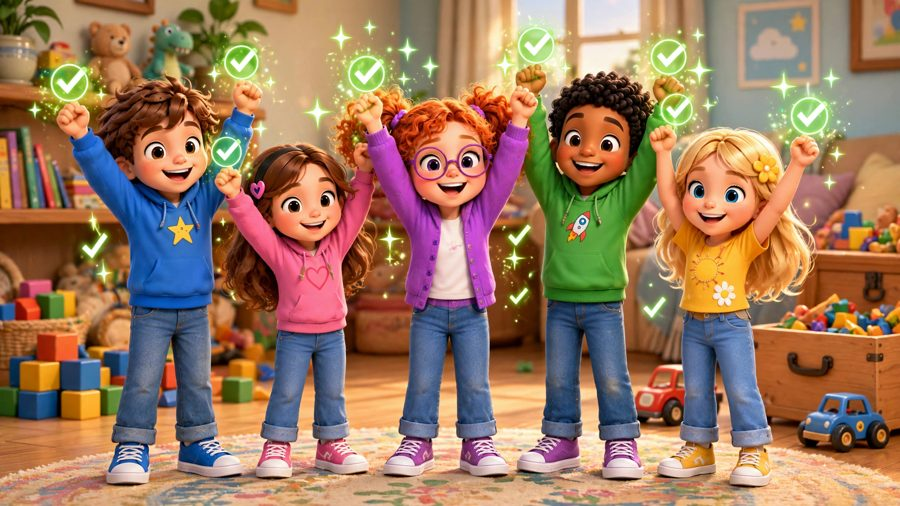
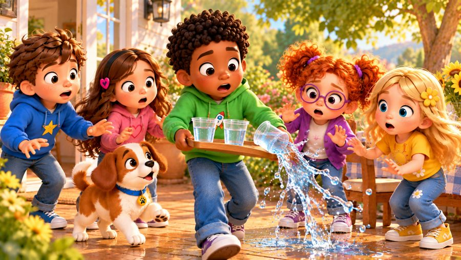

Κάνω κι εγώ το μέρος μου!
Ένα τραγούδι για την υπευθυνότητα! ⭐ Τραγουδήστε με τον Μαξ, τη Μία, τον Τζέι, τη Λίλη, τη Ρόζι και τον σκυλάκο Μπάντι, που μαζεύουν τα παιχνίδια τους, ετοιμάζουν την τσάντα τους, καθαρίζουν όλοι μαζί την τάξη — και διορθώνουν ένα μικρό λάθος όταν συμβεί.
Στο «Κάνω κι εγώ το μέρος μου!» ο Μαξ μαζεύει τα τουβλάκια του πριν βγει στην αυλή, η Μία ελέγχει την τσάντα της, όλη η τάξη μαζεύει μαζί τις μπογιές, κι όταν ο Τζέι ρίχνει το νερό, το σκουπίζει μόνος του. Με στίχους-καραόκε στην οθόνη, για παιδιά 3–8 ετών, στο σπίτι, στο νηπιαγωγείο και στα Εργαστήρια Δεξιοτήτων.

▶💡 Γιατί είναι σημαντικό: Υπευθυνότητα
Η υπευθυνότητα ξεκινά από τα μικρά: να μαζεύω τα παιχνίδια μου, να ετοιμάζω την τσάντα μου, να σκουπίζω ό,τι έριξα. Τα παιδιά που «κάνουν το μέρος τους» νιώθουν ικανά και άξια εμπιστοσύνης, και μαθαίνουν ότι οι πράξεις τους μετράνε για τους άλλους. Δώστε στο παιδί μια μικρή καθημερινή δουλειά, ευχαριστήστε το γι’ αυτήν, κι όταν γίνεται ένα λάθος, εστιάστε στο να το διορθώσετε μαζί — όχι στο ποιος φταίει.
👨👩👧 Τι μαθαίνει το παιδί
- Ό,τι χρησιμοποιώ, το βάζω στη θέση του
- Να κάνει τις μικρές του δουλειές και να κρατά τον λόγο του
- Να βοηθά σε ό,τι είναι κοινό, όχι μόνο σε ό,τι είναι δικό του
- Τα λάθη συμβαίνουν — και μπορώ να βοηθήσω να διορθωθούν
- Υπευθυνότητα δεν σημαίνει τελειότητα, σημαίνει προσπάθεια
💬 Κουβέντα μετά το τραγούδι
- Ποια μικρή δουλειά μπορείς να κάνεις κάθε μέρα στο σπίτι;
- Τι έκανε ο Τζέι όταν χύθηκε το νερό;
🏅 Κουίζ & Πτυχίο
Είδατε το τραγούδι μαζί; Τώρα διαβάστε στο παιδί κάθε ερώτηση — το παιδί δείχνει τη σωστή εικόνα. Αν απαντήσει και στις 6 ερωτήσεις, κερδίζει ένα πτυχίο για εκτύπωση!
🔒 Το όνομα χρησιμοποιείται μόνο για να φτιαχτεί το πτυχίο στη συσκευή σας. Δεν αποθηκεύουμε και δεν στέλνουμε τίποτα.
Τα κατάφερες! 🎉
Και οι 6 απαντήσεις είναι σωστές! Γράψτε το όνομα του παιδιού για να φτιαχτεί το πτυχίο.
🖨️ Δωρεάν εκτυπώσιμα
Δωρεάν για χρήση στο σπίτι και στην τάξη. Εκτυπώστε σε χαρτί Α4.
🖼️ Σκηνές από το τραγούδι





🎵 Κι άλλα τραγούδια


🎤 Στίχοι – Κάνω κι εγώ το μέρος μου!
Έχω κι εγώ
δουλειές μικρές,
που μπορώ να κάνω
κάθε μέρα, αν το θες!
Βοηθώ,
φροντίζω,
ξεκινώ...
Το δικό μου μέρος
κάνω εγώ!
Ο Μαξ έπαιζε στο πάτωμα,
με τουβλάκια και αυτοκίνητα.
Ήρθε η ώρα για την αυλή,
και πήγε να φύγει στη στιγμή.
Μα κοίταξε πίσω τη γωνιά,
παιχνίδια ήταν εδώ κι εκεί ξανά.
«Εγώ τα πήρα,
εγώ θα τα μαζέψω,
πριν στην αυλή
χαρούμενος να τρέξω!»
Ένα τουβλάκι,
ένα αμαξάκι,
μπήκαν στη θέση τους
λιγάκι λιγάκι.
Κι όταν τελείωσε,
είπε με χαρά:
«Τακτοποίησα!
Πάμε παιδιά!»
Ό,τι χρησιμοποιώ,
το βάζω στη θέση.
Κι ό,τι αναλαμβάνω,
το κάνω όπως πρέπει.
Δεν περιμένω
άλλον να μου πει...
Ξέρω πως είναι
και δική μου ευθύνη!
Κάνω κι εγώ το μέρος μου!
Φροντίζω ό,τι είναι δικό μου!
Μαζεύω!
Βοηθάω!
Και ό,τι αναλαμβάνω,
το τελειώνω εγώ!
Βάζω τα πράγματά μου
στη σωστή τους θέση,
κι όταν κάνω κάποιο λάθος,
ψάχνω τρόπο να το φτιάξω όπως πρέπει!
Λίγο λίγο,
κάθε μέρα προχωρώ...
Κάνω κι εγώ
το μέρος μου εγώ!
Η Μία ετοίμαζε την τσάντα της,
πριν ξεκινήσει η μέρα της.
Βιβλίο μέσα,
φαγητό μαζί,
«Τα έχω όλα;
Για να δω απ' την αρχή!»
Μετά στην τάξη,
μετά τη ζωγραφική,
χρώματα και πινέλα
ήταν παντού στη στιγμή.
Η Ρόζι είπε:
«Τα χρησιμοποιήσαμε όλοι,
πάμε να τα μαζέψουμε μαζί!»
Πινέλα πλύθηκαν,
χαρτιά στη σειρά,
τα χρώματα μπήκαν
στη θέση τους ξανά.
Λίγη βοήθεια
έδωσε ο καθένας,
και η τάξη έγινε
όμορφη σαν πρώτα!
Ό,τι χρησιμοποιώ,
το βάζω στη θέση.
Κι ό,τι αναλαμβάνω,
το κάνω όπως πρέπει.
Δεν περιμένω
άλλον να μου πει...
Ξέρω πως είναι
και δική μου ευθύνη!
(ρεφρέν)
(ρεφρέν)
(ρεφρέν)
(ρεφρέν)
Λίγο λίγο,
κάθε μέρα προχωρώ...
Κάνω κι εγώ
το μέρος μου εγώ!
Ο Τζέι κρατούσε
ποτήρια με νερό,
μα ένα του ξέφυγε
και χύθηκε στο λεπτό.
«Ωχ! Έγινε λίμνη
εδώ στο πάτωμα!»
Για λίγο σκέφτηκε
να φύγει βιαστικά.
Μα γύρισε πίσω
και είπε καθαρά:
«Αφού το έριξα,
θα το σκουπίσω τώρα εγώ καλά.»
Πήρε μια πετσέτα,
σκούπισε το νερό,
και σε λίγο
ήταν καθαρό.
Τα λάθη συμβαίνουν,
δεν είναι το κακό.
Το θέμα είναι μετά
τι κάνω εγώ!
Έπαιξες με παιχνίδια;
ΤΑ ΜΑΖΕΥΩ!
Έχεις μια δουλειά;
ΤΗΝ ΤΕΛΕΙΩΝΩ!
Έδωσες μια υπόσχεση;
ΤΗ ΘΥΜΑΜΑΙ!
Έκανες ακαταστασία;
ΤΗΝ ΚΑΘΑΡΙΖΩ!
Έκανες ένα λάθος;
ΤΟ ΔΙΟΡΘΩΝΩ!
Δουλεύουμε όλοι μαζί;
ΒΟΗΘΑΩ ΚΙ ΕΓΩ!
Ποιος κάνει το μέρος του;
ΕΓΩ!
Υπευθυνότητα
δεν σημαίνει
πως δεν ξεχνάω ποτέ.
Ούτε σημαίνει
πως δεν κάνω λάθη.
Σημαίνει όμως
πως προσπαθώ.
Φροντίζω
τα πράγματά μου.
Βοηθάω
σε ό,τι είναι κοινό.
Κι αν κάτι κάνω λάθος...
δεν το κρύβω.
Προσπαθώ
να το διορθώσω εγώ.
(ρεφρέν)
Τσάντα έτοιμη!
Δωμάτιο καθαρό!
Ό,τι χρησιμοποίησα
πίσω θα το βάλω εγώ!
Βοηθάω!
Προσπαθώ!
Την υπόσχεσή μου
δεν ξεχνώ!
Κι αν κάτι πάει στραβά,
το κοιτάζω καθαρά.
Κάνω ό,τι μπορώ
για να το φτιάξω ξανά!
Λίγο λίγο,
μέρα με τη μέρα,
μαθαίνω να φροντίζω
όλο και καλύτερα!
Κάνω κι εγώ!
Κάνω κι εγώ!
ΚΑΝΩ ΚΙ ΕΓΩ ΤΟ ΜΕΡΟΣ ΜΟΥ!
Μια μικρή δουλειά...
μια μικρή αρχή...
Κάθε μέρα μπορώ
να βοηθάω πιο πολύ.
Φροντίζω.
Θυμάμαι.
Βοηθώ.
Κάνω κι εγώ
το μέρος μου εγώ!